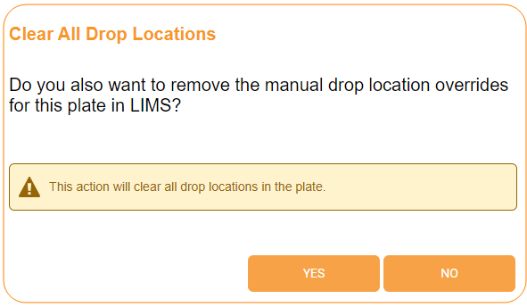
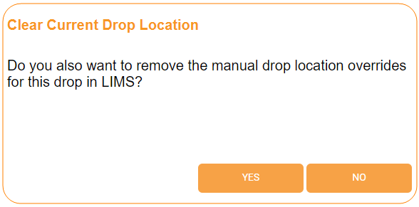

Drop Location Sub-menu¶
In this topic, you will learn about:
Drop Location Overview¶
The Drop Location algorithm in ROCK IMAGER FT is useful for hanging drop experiments, as the location of the drop varies in this type of experiment. ROCK IMAGER FT is very accurate when detecting drop locations, so it can differentiate droplet condensation, semi-circular objects, and LCP plate tape from sample drops.
The Drop Location algorithm can be initiated manually from the Optics and Camera Control panel and is sometimes executed as part of the automatic imaging of a plate. Whether or not it’s executed every time a plate is imaged or only during the first imaging session is determined in the Plate Setup menu. Executing the Drop Location algorithm only in the first imaging session is advantageous for quicker future imaging sessions.
However, if you want to see how the drop location algorithm works, you can do it in Manual Mode by clicking the Drop Location button in the Live Image sub-menu. This action will only execute the drop location algorithm on the drop currently in view.
Manually Executing Drop Location¶
Prerequisites:
ROCK IMAGER FT is in Manual Mode.
You have placed the plate under the Visible imager.
To manually execute drop location:
In the Live Image sub-menu of the Imager menu, turn the Live Stream ON.
Select Locate Drop from the Optics and Camera Control panel.
Go to the Drop Location sub-menu to see the algorithm results.
{kind=link}
Drop Location Algorithm Results
As shown in the image above, once ROCK IMAGER FT has located a drop, a red box will appear around the drop. The right side shows how the algorithm works to locate a drop.
When ROCK IMAGER executes the drop location algorithm, the drop area is imaged with a large field of view, and the lighting is set in order to create shadowing within the drop. ROCK IMAGER FT then analyzes the image to locate the contrast between the shadow in the drop and the rest of the image, and zooms in on the shadowed area. The imager then uses normal imaging settings to photograph the drop.
Note
The red plus symbol indicates the center of the drop, while the green plus indicates the center of the image.
Clearing Drop Locations¶
Occasionally you may need to clear a drop location on a per-drop or per-plate basis. For example, if your drop grows beyond the original drop size, you may need to clear the drop location and run the drop location algorithm again in order to get the best images of your drops.
Prerequisites:
ROCK IMAGER FT has already identified drop locations on your plate.
You want to remove one or all of the drop locations.
To clear drop locations on a per-plate basis:
In the Plate menu, go to the Search or Load Port tab and locate the desired plate.
OR
If the plate is currently under the imager, go to the Live Image sub-menu.
If the plate is inside the imager, click Clear Drop and select Clear All Drop Locations.
OR
If the plate is in the Storage or Load Port, select the desired plate and click Clear All Drop Locations on the command panel that appears.
When the confirmation message below appears, select Yes if you want to clear drop locations in ROCK MAKER (or another LIMS) too.
Clearing Drop Location Overrides Confirmation Message
A notification appears when all drop locations have been successfully cleared.
Clearing All Drop Locations Successful
{kind=link}
{kind=link}
To clear drop locations on a per-drop basis:
Note
This option can only be done if the plate is under an imager. If it’s not already, locate the plate in the Search tab and move it to the imager.
Go to the Live Image sub-menu and turn the Live Stream ON.
Using the well graphic in the Well Control panel, select the drop of interest. Click Clear Drop in the toolbar area and select Clear Current Drop Location.
When the confirmation message below appears, select Yes if you want to clear drop locations in ROCK MAKER (or another LIMS) too.
Clearing Drop Location Overrides Confirmation Message
A notification appears when the drop location has been successfully cleared.
Clearing Current Drop Location Successful
{kind=link}
{kind=link}